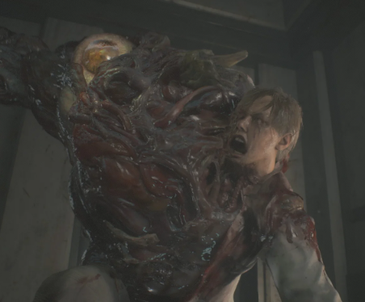
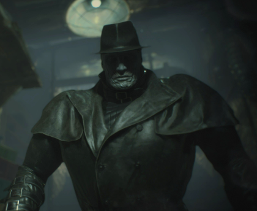

William Birkin (G1-G4)
Scienziato che si trasforma in un mostro mutante dopo l'iniezione del virus G. Evoluzione in più fasi (G1, G2, G3, G4), sempre più potente e aggressivo.
Rappresenta uno dei boss principali del gioco e la sfida più dura da affrontare nel laboratorio.
Mr. X (T-00)
Enorme Tyrant inviato dalla Umbrella per eliminare testimoni. Instancabile e molto pericoloso, segue il giocatore in diversi punti del gioco.
La sua presenza aumenta la tensione e costringe a strategia e velocità.